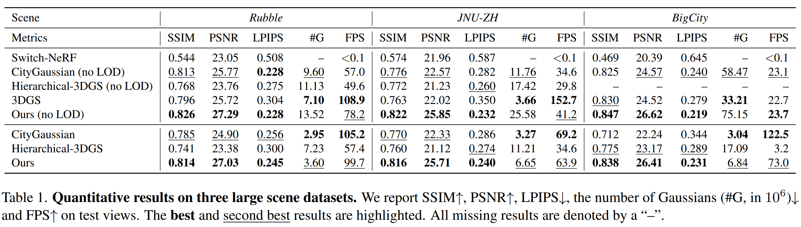
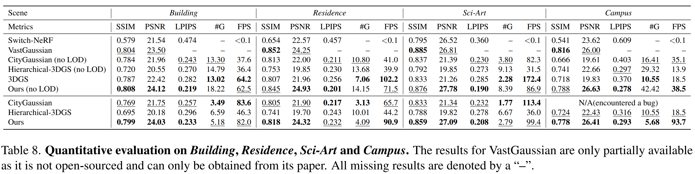
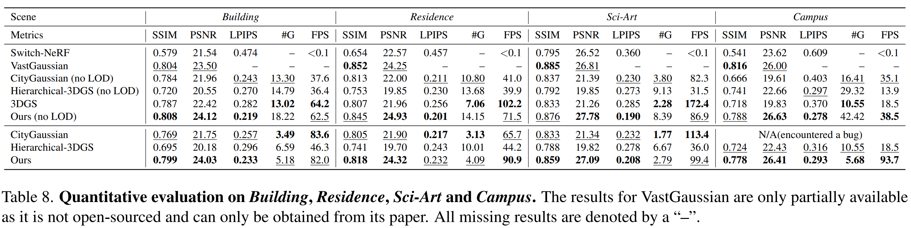

Comparison with SOTA





We present a framework that enables fast reconstruction and real-time rendering of urban-scale scenes while maintaining robustness against appearance variations across multi-view captures. Our approach begins with scene partitioning for parallel training, employing a visibility-based image selection strategy to optimize training efficiency. A controllable level-of-detail (LOD) strategy explicitly regulates Gaussian density under a user-defined budget, enabling efficient training and rendering while maintaining high visual fidelity. The appearance transformation module mitigates the negative effects of appearance inconsistencies across images while enabling flexible adjustments. Additionally, we utilize enhancement modules, such as depth regularization, scale regularization, and antialiasing, to improve reconstruction fidelity. Experimental results demonstrate that our method effectively reconstructs urban-scale scenes and outperforms previous approaches in both efficiency and quality.